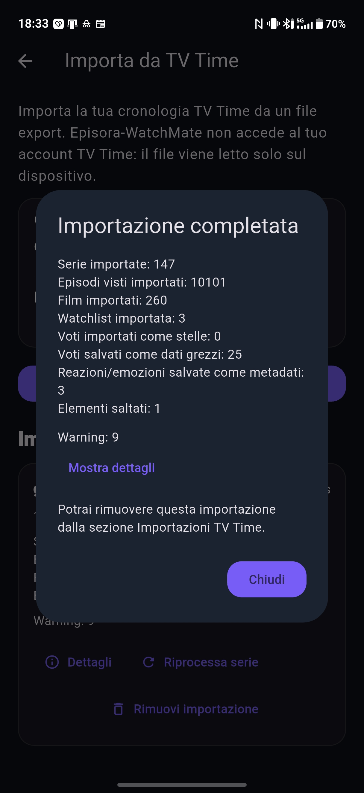

Come trasferire la tua cronologia da TV Time a Episora-WatchMate
Sei rimasto orfano di TV Time o cerchi semplicemente un modo più sicuro per tenere traccia delle tue serie TV e dei tuoi film senza dipendere da server cloud esterni? Non devi ricominciare da zero e perdere anni di tracciamento progressi.
Grazie alla funzionalità di migrazione nativa di Episora-WatchMate, puoi trasferire l'intero archivio dei tuoi contenuti visti in pochissimi istanti. I tuoi dati verranno salvati in locale sul tuo smartphone Android, protetti e al sicuro da qualsiasi futura chiusura del servizio.
I 4 passaggi per completare la migrazione:
Avviso importante: TV Time ha chiuso definitivamente i suoi server il 15 luglio 2026, eliminando tutti i dati non esportati. Purtroppo, non è più possibile scaricare la cronologia. Se in passato hai richiesto il backup tramite GDPR, puoi importare il file.
1. Esporta i dati da TV Time
Il primo passo consiste nell'ottenere il file con la tua cronologia. Puoi richiederlo in modo immediato accedendo alla pagina ufficiale di esportazione di TV Time: gdpr.tvtime.com/gdpr/self-service. Effettua l'accesso con il tuo account e richiedi il backup (GDPR Data Export). Riceverai un link per scaricare il tuo archivio (un file compresso contenente i dati in formato .json o .csv).
💡 Consiglio pratico: Ti conviene fare la richiesta direttamente dal tuo smartphone, così potrai scaricare il file direttamente nella memoria del telefono dove ti serve. In alternativa, se fai l'operazione da PC, dovrai successivamente inviare o copiare il file sul telefono (ad esempio tramite email, WhatsApp o Google Drive).
2. Prepara Episora-WatchMate
Se non l'hai ancora fatto, procurati l'applicazione sul tuo dispositivo Android (Disponibile a breve sul Play Store). Apri l'app sul tuo telefono, tocca l'icona del tuo Profilo posizionata in basso a destra, premi sull'icona dell'Ingranaggio in alto a destra per aprire le opzioni, seleziona la voce Impostazioni app e infine fai clic sul pulsante "Importa dati tv-time gdpr".
3. Carica e Importa il File
Una volta entrato nella sezione di importazione all'interno dell'app, l'operazione si svolgerà in questi passaggi chiave:
- Seleziona il file: Premi sul pulsante iniziale per avviare la ricerca del file sul tuo dispositivo.
- Scegli il file dal telefono: Trova e seleziona il file ZIP o CSV che hai scaricato in precedenza da TV Time.
- Verifica il riepilogo: L'app analizzerà il file e ti mostrerà un'anteprima del contenuto rilevato (quante serie TV, film ed episodi sono pronti da importare).
- Avvia l'importazione: Premi sul pulsante per confermare che i dati mostrati nel riepilogo siano corretti.
- Conferma finale: Dai l'ok definitivo nel popup di sicurezza che compare a schermo.
- Consenti le notifiche: Accetta la richiesta dell'app di inviarti notifiche. Sarà utile per avvisarti con un messaggio non appena l'importazione (che può richiedere qualche minuto) sarà terminata.
- Attendi il completamento: L'importazione viene avviata ed eseguita in background.
📸 Usa le frecce qui sotto per visualizzare la sequenza degli screenshot dei passaggi descritti sopra:

4. Verifica i dati importati con il riepilogo
Una volta completata l'elaborazione, l'applicazione ti mostrerà una schermata di riepilogo dettagliata. Qui potrai verificare con precisione il numero totale di serie TV importate, i film riconosciuti e gli episodi contrassegnati come visti. Controlla che i numeri corrispondano alle tue aspettative, potrai sistemare manualmente eventuali episodi/film non riconosciuti.

Cosa fare se riscontri problemi?
Assicurati che il file estratto non sia danneggiato e che non sia stato modificato manualmente. Una volta completata con successo l'importazione dei 4 passaggi, ti consigliamo vivamente di accedere alla sezione dedicata ai backup interni dell'applicazione e attivare il backup crittografato su Google Drive: in questo modo la tua nuova libreria locale sarà per sempre al sicuro da smarrimenti o guasti del telefono.
Puoi usare la sezione assistenza e contatti per chiederci una mano! faremo il possibile
Pronto a riprendere il controllo delle tue serie TV?
Scarica Episora-WatchMate, importa i tuoi dati in un clic e non rischiare mai più di perdere la tua cronologia.
Disponibile a breve sul Play Store